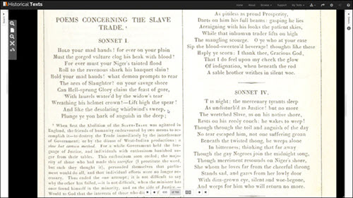

We want to highlight content within Historical Texts that showcases the lives or works of notable black individuals, the fight for the abolition of slavery, and bring to you poetry and biographies written to raise awareness of the conditions of those in slavery. We hope that we have balanced bringing you content that highlights the injustice of slavery, with stories and works of notable black individuals who should be celebrated for their achievements and contributions to British society.
We are aware that here at Historical Texts we are information professionals rather than historians. Our aim with this project is to highlight suitable and informative content from our collection. If you feel that we have missed sharing crucial content that you know to be present, particularly in EEBO or ECCO, please do send a message to our helpdesk (Historicaltexts@jisc.ac.uk) so that we can improve for the future.
Explore the lives of several noted black individuals via our collections
Born 1729
Died 14th December 1780
Brought to England at around the age of 2, he worked for three sisters in Greenwich who refused to educate him.¹ He was encouraged in his education by the 2nd Duke of Montagu who lived nearby.² He was employed as a butler and then valet by the Duke's family until 1773. He then opened a grocery shop with his wife ³ using money gifted to him by the Montagus and as a financially independent man he was able to vote in the 1774 election.⁴ He died in 1780 of complications from gout.¹ Two years after his death a collection of his letters were published. This collection of letters can be found in the Historical Texts Platform.
Born "Some time around 1735"¹
Died 1801
Francis Barber was born in Jamaica and brought across to England by his master, Colonel Richard Bathurst, who paid for his education in a school in Yorkshire. He was then sent to work as a valet for Dr Samuel Johnson in 1752 following the death of his wife.² In 1754 Barber’s owner died leaving him £12 and his freedom. He ran away to sea and Dr Johnson later arranged for his discharge from the Navy and further education for him.² Barber was one of two people present at the death of the famed writer and was given an annual sum of £71 in Johnson’s will.³
Frances Barber is mentioned in James Boswell's book regarding the life of Samuel Johnson which can be found in the Historical Texts Platform. It should be noted that he is not the author of the book More Last Words of Dr Johnson with the misleading author name Francis, Barber,³ although this book is also present in Historical Texts.
David Spens was an enslaved African man brought across from Grenada. He was baptised into the Christian faith on 10 September 1769 and soon after was set to be sold as a slave in the West Indies.¹ On discovering this David ran away and sought help from his neighbours who raised money to fight his consequent arrest in court. The story is captured in a footnote on page 545 of the following text:
You can also read more about the role Scotland played in both slavery and its abolition on the Black History Month website.
John Naimbanna was an African prince who was sent to England in 1791 to receive an education and to study Christianity. His father, King Naimbanna, was friends with abolitionist Granville Sharp.¹ During his time in England he converted to Christianity and was noted for his desire for knowledge. He apparently studied for 8-10 hours a day.² He returned home following the death of his father but fell ill on the journey and died hours after he arrived home. On his death bed he apparently urged his brothers to oppose the slave trade and his aptitude for study was used by abolitionists in their arguments against slavery.¹
An account of the life, character and death of the prince can be found on our Historical Texts platform (pages 333-337) along with numerous works by Granville Sharpe, arguing for the abolition of slavery.
Absalom Jones was born into slavery but worked to pay for, first his wife's, then his own freedom.¹ He became America's first black priest and founded a black church after the Methodist congregation he was a part of tried to enforce segregation on its members.²
During 1793 there was an outbreak of Yellow Fever in Philadelphia. A doctor named Rush, believing blacks to be naturally immune to the disease, encouraged the black community to help care for the sick and help bury the dead.³ Following the outbreak, accusations were made that members of the black community had acted greedily in over charging the sick for their services. This accusation was refuted by Absalom Jones in a pamphlet he produced.
John Baptist Philip was from a landowning family in Trinidad. He was sent to Edinburgh to attend university and graduated as a doctor.¹ He fought for the rights of his fellow countrymen in Trinidad who, although protected under the law, were being mistreated. His petition was put before Lord Bathurst, secretary of state for the Colonies who ruled in his favour.² His death is noted in a text in Historical Texts, alongside mention of his work Free Mulatto.
Olaudah Equiano's biography states his place of birth as Eboe in present day Nigeria.¹ He was kidnapped and sold into slavery at the age of 11. In 1757 he was bought by a navel captain for the sum of £40 and traveled extensively on the seas. He received some education in this time and worked to earn the money to buy his freedom.²
While in London he became involved in the movement for the abolition of slavery and was a key member of the Sons of Africa. Knowing that his own story would be crucial to the abolition movement, he was aided in publishing his autobiography by British abolitionists Hannah Moore, Josiah Wedgwood and John Wesley.³
The book was a success and helped to make Equiano very wealthy,¹ but was also crucial in raising the awareness of the plight of those in slavery. Some regard him as the originator of the slave narrative.³
John Marrant was estranged from his family following a conversion to Christianity, and later trained as a Methodist minister.
Explore the works of those who fought against the practice of slavery.
Born around 1757
Died after 1791
Ottobah Cugoano was captured and sold into slavery at the age of 13 in Ghana.¹ He was brought to England in 1772 and was given his freedom following the Somerset legal case.² He worked as a servant for the Cosway family and became involved in the Sons of Africa abolitionist movement. In 1787, he published Thoughts and sentiments on the evil and wicked traffic of the slavery of the human species, a religious and philosophical argument against slavery, making him the first African to demand total abolition.³
You can read his arguments for abolition on our platform:
You can also find out more about life and work of Ottobah Cugoano on the Black History Month website.
William Wilberforce was an English politician who, following a conversion to evangelical Christianity, fought for the abolition of slavery, working along side other notable figures such as Thomas Clarkson and Granville Sharpe.¹
He saw through the successful introduction of the Abolition of the Slave Trade bill in in 1807 but continued to fight for the complete abolition of slavery throughout the empire. Just three days before his death the Abolition of Slavery bill was passed in parliament on 26 July 1933.² Some of Wilberforce’s literary works can be found on the Historical Texts platform:
Thomas Clarkson studied mathematics at St John’s College, Cambridge and in 1785 entered a Latin essay competition with the title "Anne liceat invitos in servitutem dare" (Is it lawful to enslave the unconsenting?).¹ Following his research for the essay, in particular Benezet's Historical Account of Guinea, Clarkson decided to dedicate his life to ending slavery. His essay attracted him to the attention of the abolitionist Granville Sharp.²
Thomas Clarkson traveled extensively gathering evidence about the slave trade and in 1788 published his Essay on the Impolicy of the African Slave Trade.¹ Another notable publication by Clarkson was A summary view of the slave trade, and of the probable consequences of its abolition. Both of these works are available on the Historical Text platform.
You can read a more extensive account of Thomas Clarkson’s life and work on the Oxford Dictionary of National Bibliography website.
William Roscoe of Liverpool worked for the abolition of slavery. He spoke in parliament on the issue and wrote poetry to bring the issue to the attention of the public.
Abolitionists produced literature highlighting the conditions enslaved Africans were enduring in order to gain support for their cause. The following article was published in 1793.
• Remarks on the methods of procuring slaves with a short account of their treatment in the West-IndiesReligious arguments were used on both sides of the abolition debate although many abolitionists were motivated by personal faith.
John Wesley, famous for his role in the Methodist church, visited America between 1736 and '37 to preach. Whilst there he came into contact with enslaved people and was unhappy with the way that they were treated but did not immediately act to try to change things.¹
Like Thomas Clarkson, Wesley read Benezet,s Some historical account of Guinea and following the success of the Somerset case, Wesley was inspired to write his tract Thoughts upon Slavery in 1774.²
Newton was pressganged into the Navy at 11 and later worked as a slave master on several ships. Due to illness he left seafaring in 1754 and applied to be an Anglican minister.¹ He was a mentor to William Wilberforce and encouraged him to exercise his faith through his position in parliament.
In 1788 he wrote Thoughts Upon the African Slave Trade, which described the horrors he had witnessed during his time participating in the slave trade.²
It seems shocking and distasteful by modern standards that arguments were put forward to defend the practice of slavery.
The following article is entitled An apology for negro slavery, but this is the use of the word apology like apologetics and is in fact an argument for the practice of slavery.
This section is designed to showcase poetry that was used to raise awareness of the issue of slavery and to encourage support of abolition.
"What and if to death he send me,
Savage murder tho' it be
British Law shall ne'er befriend me,
They protect not slaves like me..."
"Cease, ye British Sons of murder!
Cease from forging Afric's chain;
Mock your saviour's name no further,
Cease your savage lust of gain."
Includes a section of poetry concerning the slave trade
"Oh, he is worn with toil! the big drops run
Down his dark cheek; hold — hold thy merciless hand,
Pale tyrant! for beneath thy hard command
O'erwearied nature sinks. The scorching Sun,
As pitiless as proud Prosperity,
Darts on him his full beams: gasping he lies,
Arraigning with his looks the patient skies,
While that inhuman trader lifts on high The mangling scourge."
"Behold that Christian! see what horrid joy
Lights up his moody features, while he grasps
The wish,d-for gold, purchase of human blood!
Away, than seller of mankind! Bring on
Thy daughter to this market! bring thy wife!
Thine aged mother, though of little worth,
With all thy ruddy boys! Sell them, thou wretch"
"Your merit stands, no greater and no less,
Without, or with the varnish of success;
But seek no more to break a Nation's fall,
For ye have sav'd yourselves and that is all.
Succeeding times your struggles, and their fate,
With mingled shame and triumph shall relate,
While faithful History, in her various page...
Tells how you strove, and that you strove in vain."
Historical Texts contains a number of accounts of the lives of people who were enslaved. Many were published to bring the experiences of those in slavery to the attention of the public including the life story of William Green.
This biography is one of the earliest narratives of the life of an African American.¹ It tells of his efforts to earn enough money to buy his own freedom and then his life after purchasing his freedom, while he worked to free his wife and children.
The underground railway was a network of safe houses and individuals who helped African American slaves to escape to free states. This 1892 books recounts the work of the underground railway (pages 377 and 396).